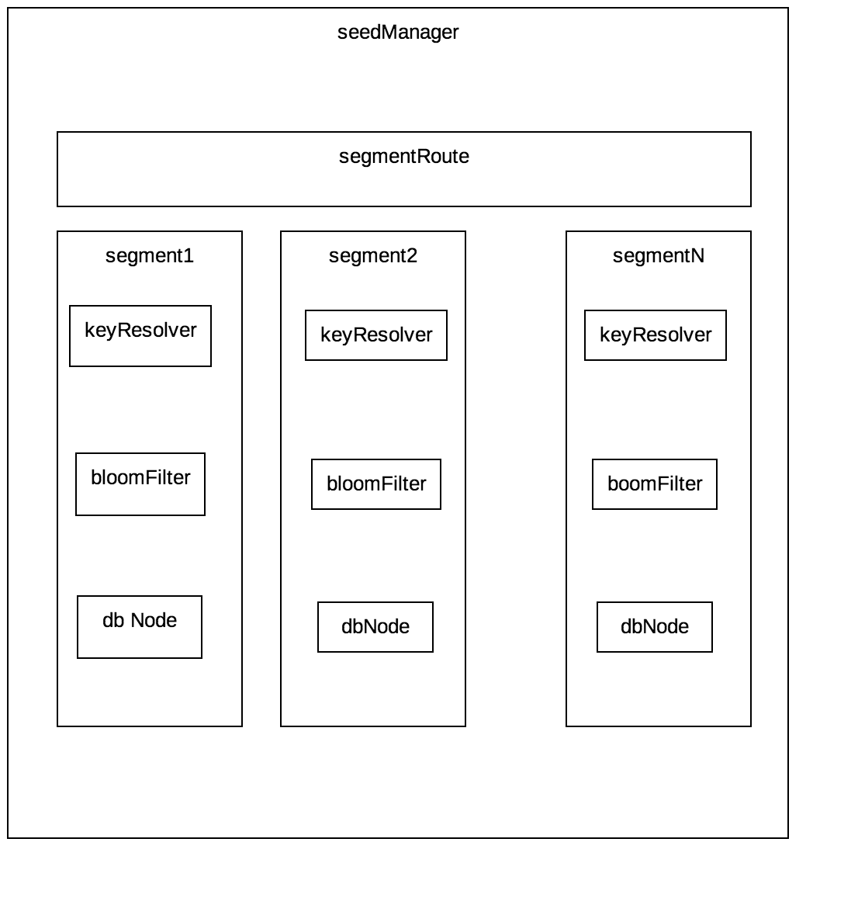

seedManager是schedular的角色，VS的seedManager逻辑比较复杂，但是大多数情况下你不需要关心seedManager的原理。所以从本章节开始，文档讲述设计相关，为VS进阶相关知识。
seedManager基于两个核心工具，分别是bloomFilter和berkleyDB，bloomFilter用来做消重，berkleyDB用来存储种子数据，berkleyDB本身就是数据库，他和redis一样也是key-value的数据库，但是其实性能优于redis。目前VS对berkleyDB只能实现单节点，运用berkleyDB目的是实现断点续爬和告诉存储。 bloomFilter没啥可说的，他是hash的一种优化，通过牺牲冲突域的方式，以极小对内存代价实现常数级别时间复杂度的消重计算。
seedManager的整体结构如下

segment
看图说话吧，一个种子如果要入库，首先需要有一个分段路由，分段的目的并不是为了减少并发开销，而是为了实现一个重复抓取的功能，完全相同的一个URL，在不同时间进行抓取，获取到的数据可能不一致的，比如某一个商品的评论，每隔几天就会有新的评论，但是上面的URL和上面评论的URL确是没有变化，所以存在增量抓取的需求。但是爬虫框架大多数情况又不允许重复抓取，因为网络是一个网状结构，新的到的种子可能刚刚处理过，如果每遍历一个节点就重复抓取，那么爬虫可能永远不能结束，主要的是会大量浪费机器资源。需求是有些时候我们需要消重，有些时候又需要它不消重，怎么办呢？VS在这里为这个提供了支持，他的原理是在时间上进行种子空间分片，两个相同的种子，不允许在同一个segment中同时出现，但是允许在不同segment中同时出现。目前segment计算是基于时间的，也就是说只支持通过时间来进行分片。
对于segmentRoute来说，需要考虑一个叫做分片粒度的问题，比如可能需要三天进行一次重复抓取，或者一周抓一次。如果需要定制的话，实现这个接口com.virjar.vscrawler.core.seed.SegmentResolver,植入到VSCrawlerBuilder里面即可。具体代码可以参考 com.virjar.vscrawler.core.seed.DefaultSegmentResolver，默认按天分段
bloomFilter过滤
路由到segment之后，就开始准备加入种子了，这个时候首先过一下bloomFilter，如果bloomFilter判定种子已经加入过，那么新加入的种子将会被ignore。这里又涉及一个问题的，在种子消重的时候，怎么判定两个种子是不是一样的。http://www.virjar.com/resource.html和http://www.virjar.com/resouce.html#test这两个链接一般来说就是同一个网页，第二个相对于第一个URL是存在一个网页内部锚点而已。或者两个URL，带有两个时间戳，但是URL请求得到的网页也是不同的。再或者jsonP的场景，jsonP默认会加一个callback参数，但是callback后面会有随机值，但是实际上服务器并不关心这个字段，只是原样返回。VS考虑到这个问题，提供keyResolver扩展点，你只需要实现接口com.virjar.vscrawler.core.seed.SeedKeyResolver就可以轻松实现消重规则自定义了。
berkleyDB
种子消重过滤通过之后，就开始入库了，其实很简单，使用keyResolver得到的key，所为key，seed对象作为body，存储到数据库即可。
种子分发
对于seedManager来说，在分发种子任务的时候，不能直接开启数据库游标，这样db可能随时移动游标了，而且貌似会有并发错误（感觉我对berkleyDB的用法还不是特别熟悉，哪位那大神能不能帮忙review一下）。所以seedManager会缓存一部分种子数据在内存中，当缓存中没有数据的时候，会打开数据库，加载一批数据到内存。然后种子任务请求的时候直接在内存获取。这个时候，也涉及到段计算，分段导致内存load的逻辑不是非常清晰了，简单来说段索引会直接维护到内存（所以不建议分段粒度特别细，要不然内存可能要爆？），同时段索引进行了排序，cacheload的时候，会移动段索引游标，并且检查当前游标发生时间的是历史节点还是未来节点，如果是未来，则发送延时事件，然后睡眠等待，由事件循环机制在未来唤醒当前睡眠线程。
种子状态更新
即使分发了种子，数据也不会从seedManager里面删除，为了保证一致性，除非收到了种子处理完成的消息，否则数据不会有任何变化。这个时候，VS在处理这个种子的完成的时候，会调用finish方法归还种子，这个时候，seedManager会判断这个种子是否是处理完成（不管是成功还是失败，只要判定处理完成），如果处理完成，则会对其归档，并且从待爬去任务队列里面删除。否则仍然会放到待处理任务队列中
吐槽
seedManager里面，因为berkleyDB经常出现并发问题，所以挺多加锁逻辑，感觉这个代码有点乱